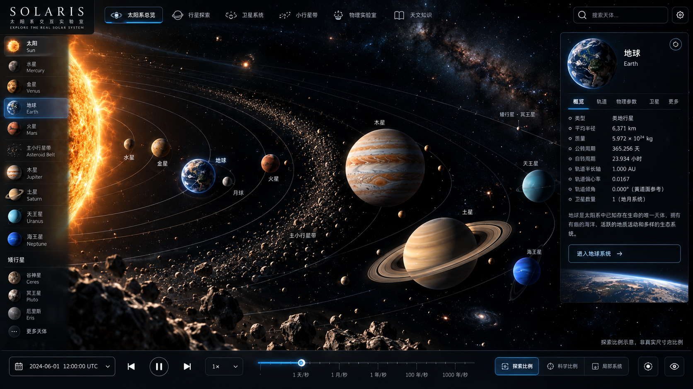
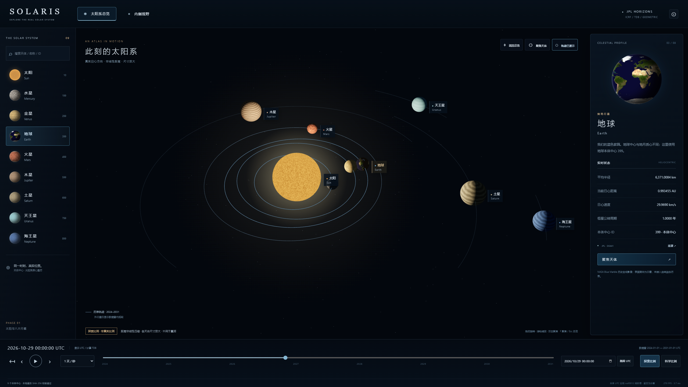
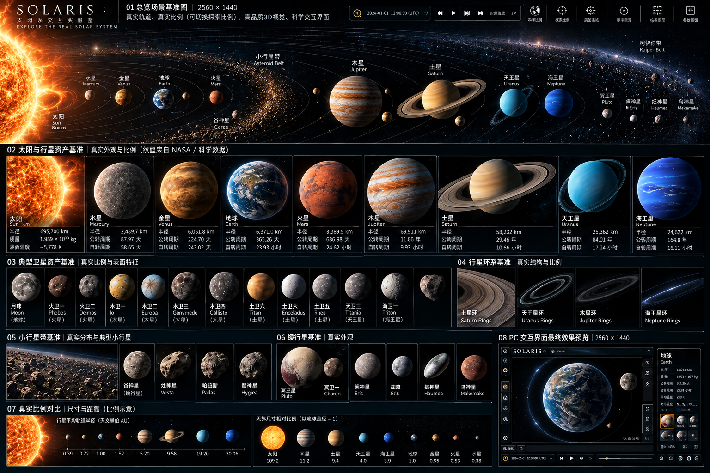
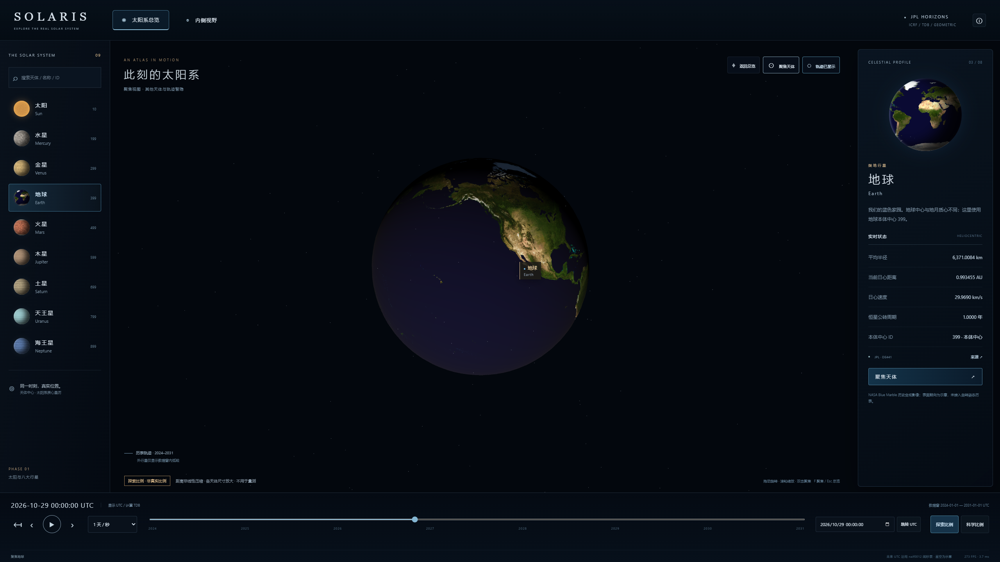

左栏为用户提供的生成式概念参考，右栏为实际Chrome浏览器2560×1440截图。概念图只决定视觉方向，不能作为数字、位置、尺寸、轨道、贴图的来源。图片仅等比例完整显示，未用于应用背景或天体纹理。




| 维度 | 已落实 | 明确差异 |
|---|---|---|
| 布局与色彩 | 深色空间、冷蓝灰轨迹、暖色太阳、顶栏/左目录/右详情/底部时间 | 按真实日期分布构图，不把行星固定为一行 |
| 光照与空间 | 太阳方向、日夜半球、透视与相机相对坐标 | 光晕/补光为增强，不做光度或姿态精确预测 |
| 资产完成度 | 可区分的岩质、云层和巨行星基础材质；有出处的NASA地球图 | 无精细太阳Shader、高级大气、正式环系与大规模高质量贴图 |
| 科学比例 | 尺寸与距离统一映射，标签与聚焦辅助观察 | 远景内行星常小于像素，不用尺寸伪造可见度 |
完整浏览器与性能报告 · 独立留出点误差报告 · 验收总览